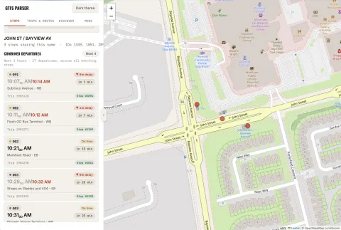
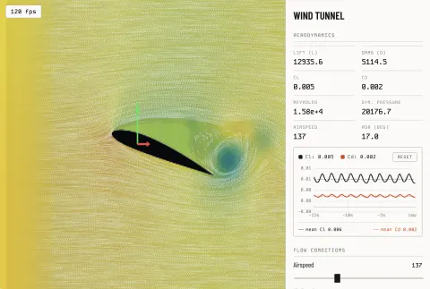
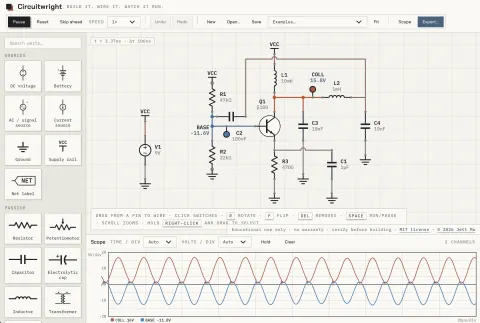
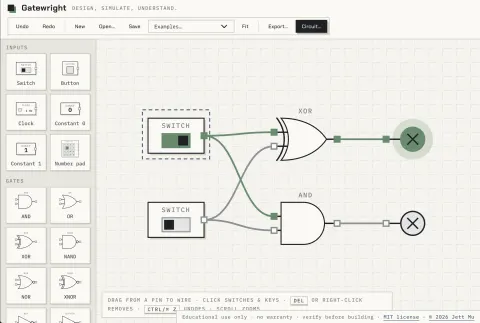
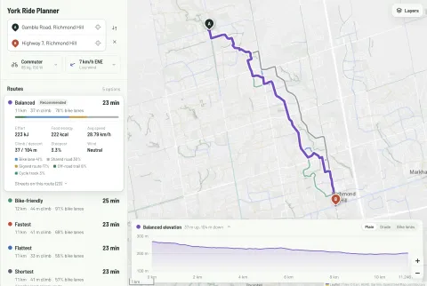

Jett M.
Student in Toronto, Canada. I build simulators and tools, mostly in C++ and the browser.
- Building
- A GTFS Parser, an app that tells you when the next bus is coming.
- Learning
- Competitive programming and advanced C++.
- Also into
- Photography, mathematics, robotics, video editing, aviation and radio (ham callsign VA3NDE).
- C++
- Java
- Python
- SwiftUI
- TypeScript
- JavaScript
- HTML/CSS
Projects
All projects-
GTFS Parser
A C++ library that reads transit schedules and live GTFS feeds, plus a web app for departures, trips and bus positions.

-
Wind Tunnel
A GPU flow solver for NACA airfoils. Reshape the wing and watch lift, drag and pressure update live in the browser.

-
Circuitwright
A circuit simulator. Wire up parts, run it, and probe voltages on a built-in oscilloscope.

-
Gatewright
A digital logic sandbox. Drop in switches, clocks and gates, wire them together, and watch signals propagate.

-
BikeTool
A bike route planner for York Region. It suggests up to six routes between two points and estimates the time and energy each one takes, from bike lanes, elevation and live wind.
